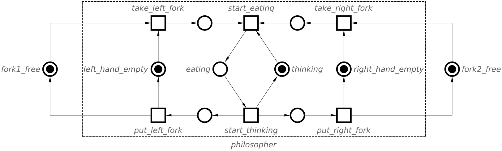
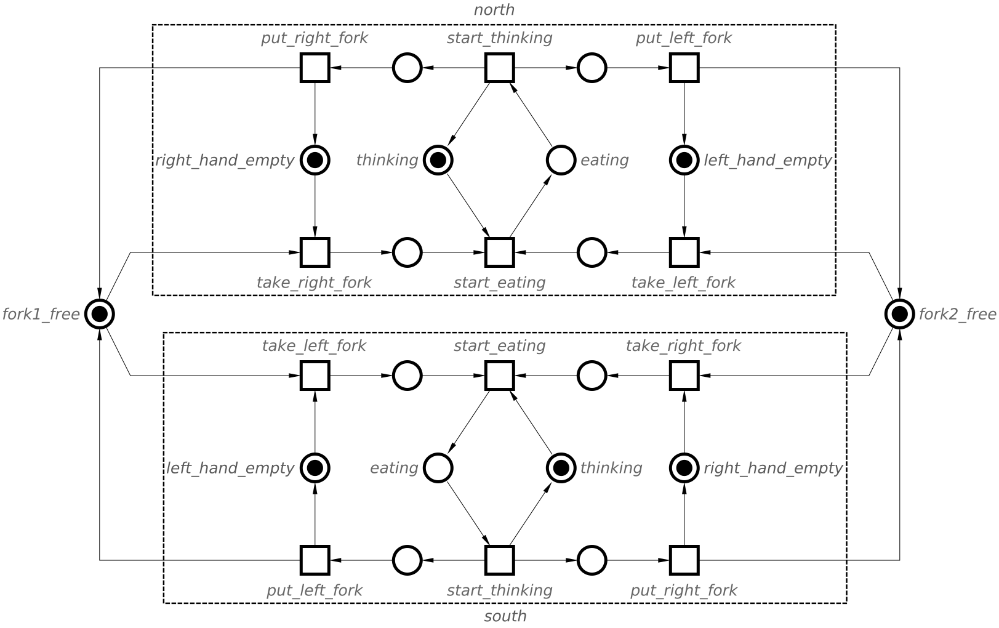
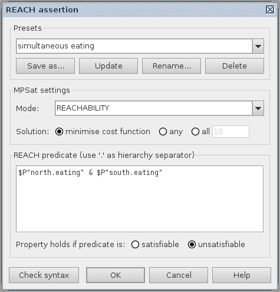

Table of Contents
Modelling with Petri nets: Dining philosophers
In this tutorial we will use the famous Dining philosophers problem as an example of resource allocation problems where several processes compete for resources. It also illustrates the power and convenience of Petri nets as a formalism for modelling and analysis of such problems. There are five philosophers sitting around a table. Each philosopher is either thinking or eating. There are five forks on the table, one between each pair of adjacent philosophers, shared by them; that is, each fork can be used by a philosopher either on its left or on its right. To eat a philosopher has to acquire both forks, the one on his left and the one in his right, in any order. If a fork is already taken by a neighbouring philosopher, he will be waiting until the fork becomes available again. After eating, a philosopher returns to thinking while putting back both his forks.
Modelling
The behaviour of a single philosopher can be modelled with take_left_fork, put_left_fork, take_right_fork, put_right_fork, start_eating and start_thinking transitions. The state of the philosopher is captured with a token in either the eating or thinking place and the availability of forks is determined by the presence of a token in fork1_free and fork2_free places respectively (the corresponding fork is on the table), as shown in the following Petri net.

Note the difference between the names and labels:
- A name is a unique alpha-numerical ID of a Petri net node which is used as the node reference in simulation and verification.
- A label is just an arbitrary text attached to a node.
For simplicity let us model the problem with two philosophers and two forks only. In this case, fork1_free and fork2_free are shared by the philosophers north and south, sitting at the North and South sides of the table respectively. This is modelled by the following Petri net.

Capture this Petri net within Workcraft as follows (see Help on editing Petri nets, in particular you can double-click on a place to put/remove a token):
- Build a Petri net model for a single dining philosopher.
- Select the places and transitions representing the philosopher (exclude the
fork1_freeandfork2_freeplaces) and combine them using the paging tool") . The created page is our philosopher model.
. The created page is our philosopher model. - Make use of copy-paste features to replicate the philosopher model. Name one of the pages
southand the othernorth. - Rotate the
northpage using the rotation tool") or
or ") . Position the
. Position the northandsouthpages opposite each other. - Share
fork1_freeandfork2_freeplaces between thesouthandnorthphilosophers by connectionfork_take_*andfork_put_*transitions accordingly.
Note the difference between groups and pages.
- Groups are just unnamed decorations for several nodes, while pages are named nodes containing other nodes.
- Nodes in different groups must have unique names, while pages provide namespaces for their included nodes, so nodes in different pages can have the same local name.
Simulation
Enter the simulation tool by pressing the ![[M] Simulate](../../../help/core/editor_tools-simulate.png "[M] Simulate") button and play with the dining philosophers model. Initially both forks are on the table and places
button and play with the dining philosophers model. Initially both forks are on the table and places fork1_free and fork2_free are marked. Each philosopher can take any of the forks - the take_left_fork and take_right_fork transitions are enabled for both norht and south philosophers.
If you allow the same philosopher to take both forks (e.g., by clicking transitions south.take_left_fork and south.take_right_fork), then he can eat, while the other philosopher thinks. When he is finished with the meal he enters the thinking state (click transition south.start_thinking) and returns the forks (click transitions south.put_left_fork and south.put_right_fork). This trace of transitions brings us to the initial marking where the philosophers compete for the forks again.
Another scenario is possible when each philosopher takes only one of the forks (e.g. click transitions south.take_left_fork and north.take_left_fork). This leads to a deadlock as the philosophers wait for each other to return the fork, but none of them can do it until they acquire the other fork and eat.
Simulate the above distinctive scenarios for dining philosophers. Explore the navigation buttons in the Control panel and go back and forth through the trace of events in your simulation. Try random simulation at different animation speeds.
Verification
Various properties of a Petri net model can be verified using Punf and MPSat as the backend tools (see overview of third-party tools for more details). The tool interfaces available for Petri net verification are collected under Verification menu.
The easiest and most obvious property to check is that the model does not have a deadlock – choose the Verification→Deadlock freeness [MPSat] menu item for this. As our dining philosophers model is not deadlock-free, this should result in the following error message with a trace leading to the deadlock (you can analyse the trace in the simulator by clicking the Play button).

Verification of custom properties is based on reachability analysis on the Petri net. For this a custom property should be expressed in Reach language. For example, you can try and verify that both philosophers cannot be eating at the same time:
- Open REACH assertion window via Verification→REACH assertion [MPSat]… menu.
- In MPSat settings section set the Mode into Reachability analysis and the Solution into minimise cost function.
- Enter the following Reach expression as the property predicate:
$P"north.eating" & $P"south.eating". Note that.is used as a hierarchy separator in Reach expression. - Select unsatisfiable to denote that the property holds if predicate is unsatisfiable.
- Save this property as a preset for future use (Save as… button), e.g. under the name simultaneous eating.
The result should be similar to the following screenshot. 
Let us explain how to interpret the Reach predicate. Consider an expression $P"place_name". It instructs MPSat to check if a marking is reachable where the place place_name has a token. In basic cases one can apply logical operations and quantifiers (e.g. &, |, forall, exists, etc.) to a marking which violates the property. For expressing more sophisticated properties refer to Reach language documentation.
In our case, the expression $P"north.eating" & $P"south.eating" tells MPSat to check if a marking is reachable where both places north.eating and south.eating contain tokens, which corresponds to both philosophers eating at the same time. If such a marking is reachable, then our property is violated and a trace of Petri net transitions leading to this marking is reported. If this Petri net marking is not reachable, then the property holds, as shown in the following screenshot.

Note that the Reach expression is usually formulated as the negation of the property one wants to check, i.e. one is looking for a ‘bad’ reachable marking witnessing the violation of the property, with the predicate specifying what it means for a marking to be ‘bad’. If there is no reachable marking satisfying this predicate then there are no ‘bad’ reachable markings, and so the property is satisfied in every reachable marking.
In the above example, the property we would like to verify is, “both philosophers cannot be eating at the same time”. So one has to look for a reachable marking where this property is violated, i.e. the negation of this property holds, i.e. a reachable marking where “both philosophers are eating at the same time”. The Reach predicate expressing this is $P"north.eating" & $P"south.eating". The tool than automatically checks that no reachable marking satisfies this predicate, and concludes that the property holds.
Complete the following tasks:
- Verify the model of dining philosophers for deadlocks. Simulate the trace leading to the deadlock.
- Modify the model in such a way that the deadlock is prevented (hint: force the philosophers to take the forks in particular order, one of them always takes the fork to his left first, while the other always takes the fork to his right first).
- Verify that none of the philosophers can be eating with one of the forks still on the table (hint:
($P"north.eating" | $P"south.eating") & ($P"fork1_free" | $P"fork2_free")).
Solutions
Download all the Workcraft models discussed in this section here:
Dining philosophers models (20 KiB)
===== Feedback =====
- As discussed in https://www.dokuwiki.org/plugin:include#controlling_header_size_in_included_pages, by default, the headers in included pages start one level lower than the last header in the current page. This can be tweaked by adding an empty header above the include:\\
====== ====== {{page>:tutorial:feedback&inline}} - For offline help generation the content of
feedbackpage should be temporary wrapped in<WRAP hide>. Note that the headers still propagate to the table of contents even if inside the hidden wrap. Therefore the Feedback title needs to be converted to something else, e.g. to code by adding two spaces in front.